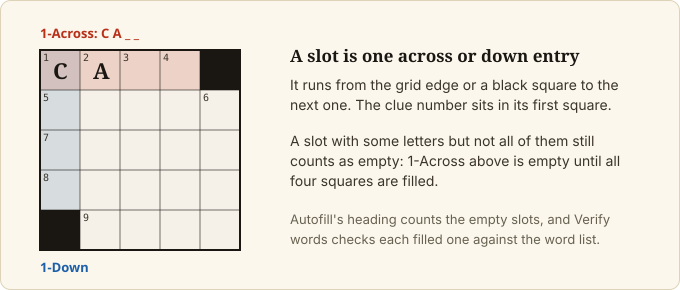

Set up the grid
Goal
Start a new grid of the size you want, shape its black squares, and check the pattern against the app's warnings.
Prerequisites
- The app is running (Install on macOS).
Steps
1. Start a new grid
Open the Grid tool in the left rail. Under New grid, click 11×11, 15×15 or 21×21.
If the current grid has any content, the app first asks Replace the current grid? Unsaved changes are lost.
Click Replace to continue or Cancel to keep your work. The app opens with an empty 15×15 grid.
2. Turn squares black
Click a square, then press Space or .. Press the same key again to turn it white. The Black square
button in the Grid tool does the same for the selected square, and is greyed out when no square is selected
or the square cannot be changed (a theme-locked square cannot be made black). Turning a square black erases any
letter in it and, with Symmetry on, in its mirror square too; Undo brings the letters back.
3. Keep the pattern symmetric
Under VIEW in the left rail, the Symmetry toggle is on by default. While it is on, turning a square
black also turns black the square directly opposite it through the centre of the grid, so you only click
one square of each pair. Click Symmetry to turn mirroring off.

4. Read the numbers, stats and advice
Clue numbers appear in the squares where words start and update as you edit.


The GRID block in the left
rail shows Total, Black (count and percentage of the grid), Filled and Words. Below it, a
VIOLATIONS block lists messages about the pattern. Some are advice, such as a high black-square count or a
low word count; others are warnings about the grid itself, such as isolated white regions or a word under three
letters (positions in these messages count from 0). None of them stops you from editing, filling or exporting.
5. Move around with the keyboard
The hint under the grid lists the keys: type letters, arrow keys move, Space or . toggles a black square,
Enter switches between across and down, Tab jumps to the next word, Backspace clears. Undo and Redo
are in the top bar, on Cmd+Z and Cmd+Shift+Z (Ctrl+Z and Ctrl+Shift+Z on Linux).
Final Result
The GRID block reports your black-square count, and the numbers appear in the squares.
Next Steps
- Put words in: Find words by pattern, Add theme words, Autofill a grid.
- Keep your work: Save, reopen and recover your work.
- Every control and key: Web app reference.